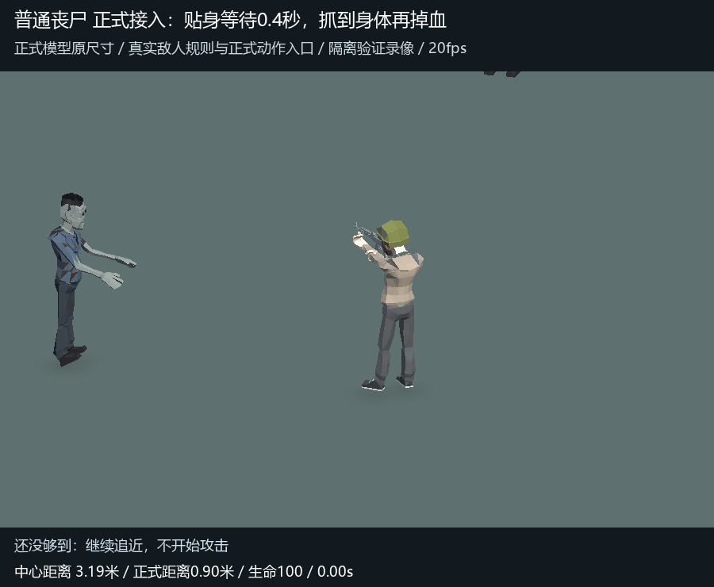
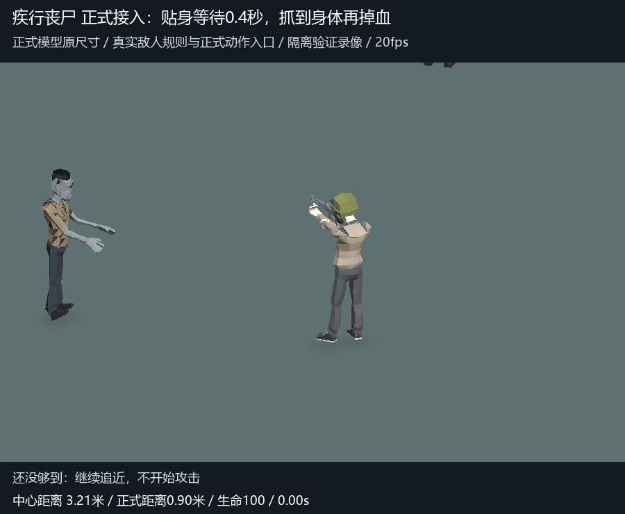
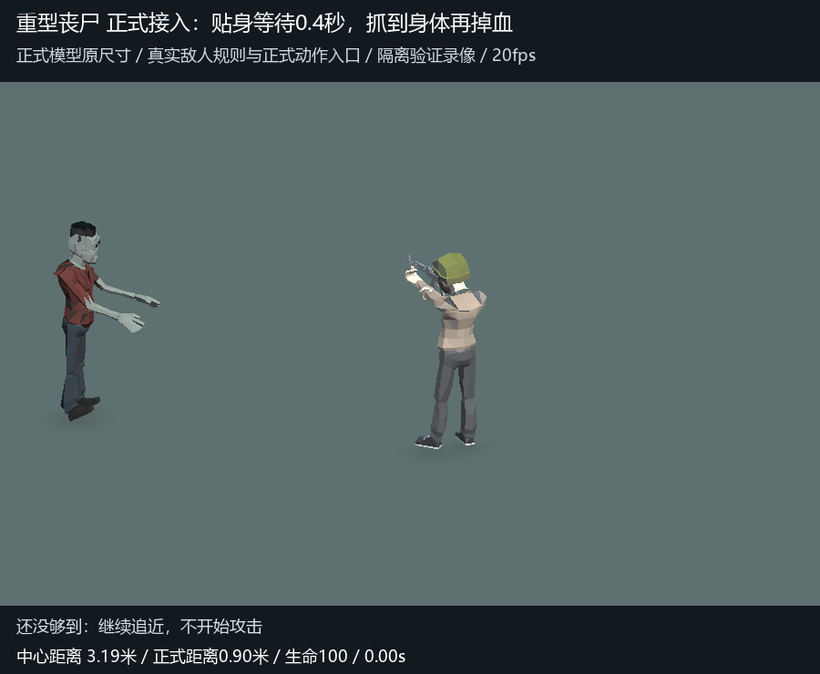

正式接入：贴近后抓挠，命中再掉血
三类丧尸都在中心距离0.9米停步，等待完整0.4秒再前抓；玩家提前跑开会取消。大幅后拉、前抓、内下撕沿用已确认版本。
普通丧尸

疾行与重型丧尸


正式配置出生，真实TickEnemies推进位置、起手、取消与生命100→90，正式EnemyView叠加骨骼动作。原模型与主角同框、保持原尺寸。每段5秒/20fps，后半段演示跑开取消；为观察一次完整交互，首击收招结束后保持画面。属于隔离场景规则与表现验证，不是完整闯关或双机联网录屏。